We discovered that we apparently can't use the WiFi at Pittsburgh and have adapted an old system for scouting. The setup is the hardest part, once that's done, scouting should be similar to last competition.
Note: If we can use mobile data, skip the setup steps and simply open notjosh440.github.io. There is a similar form there. If you have an android phone, you can simply download the file and open it from the files app into your browser.
1. Download the scouting page from the Google Drive link ("Open With" -> Save to Files) Make sure to save it to "On my iPhone." You can't save it to downloads because you won't be able to access that without an internet connection. (Image 1-7)
2. Download the "HTML Viewer Q" App to view the file (Files app cannot run the JS code needed for it to work). (Image 8)
3. Open HTML Viewer Q and click on the Files button (The folder-looking thing or 2nd button from the right on the bottom of the screen). (Image 9)
4. Navigate to "On my iPhone" and open the FULLY_CONTAINED.html file. (Image 10)
5. You are now ready to start scouting! Read through the form before the first match so you know what to do and remember to follow Josh's scouting schedule. There have been a few changes to the scouting form, mostly to fit the new types of data we need. Note: "Robot:" field is based on the order they show up on the screen. Red 1 is the top red robot, Blue 3 is the bottom blue robot... Josh has assigned all of us one robot to scout. Starting location is based on where the robot is if you're looking from the middle of the field. Just because something is first on the screen doesn't mean it's on the left!
6. Fill in the form and remember to watch your robot closely. The scouting is separated by which part of the match is happening. For example, once the autonomous period is over, you should scroll down to the teleop section.
7. Once the match is over, make sure to leave a comment and press the "Make QR Code" button. Take a screenshot of the QR Code, clear the data, and go back to the top of the form. (Image 11) Notice how you have to fill in your robot again.8. At the end of the shift, go back to James's laptop and scan in every QR code you collected. When in doubt, it's better to scan something twice. We have duplicate protection.
|
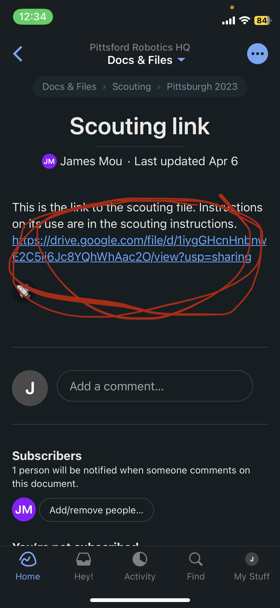Img 1 |
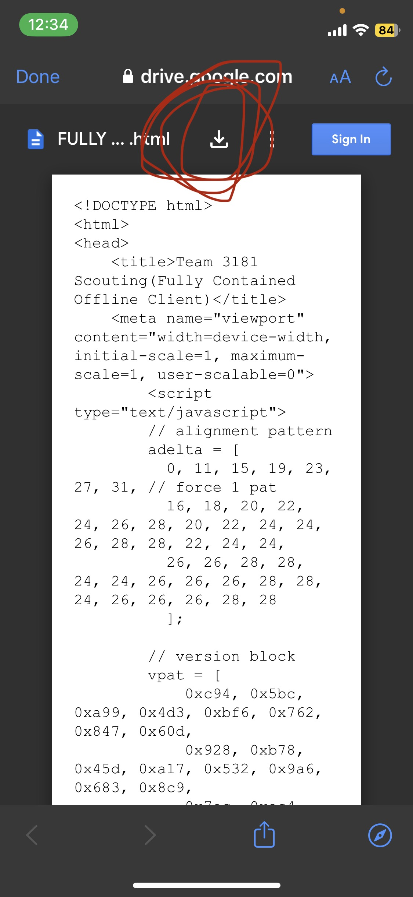Img 2 |
|
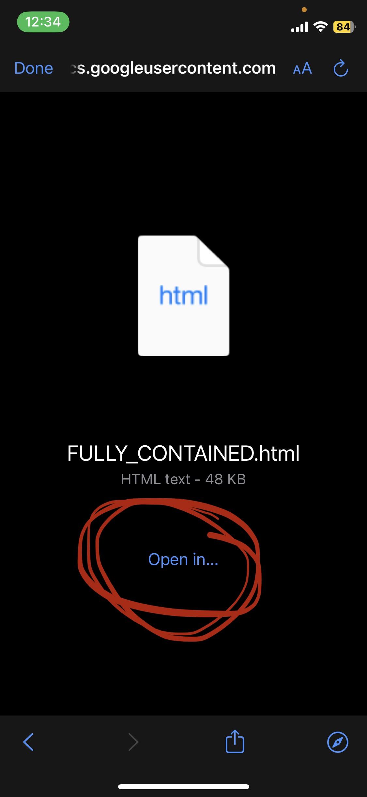Img 3 |
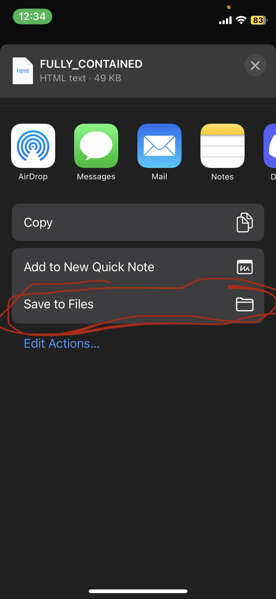Img 4 |
|
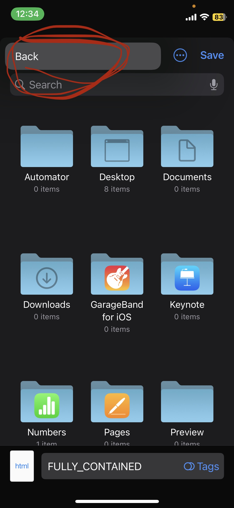Img 5 |
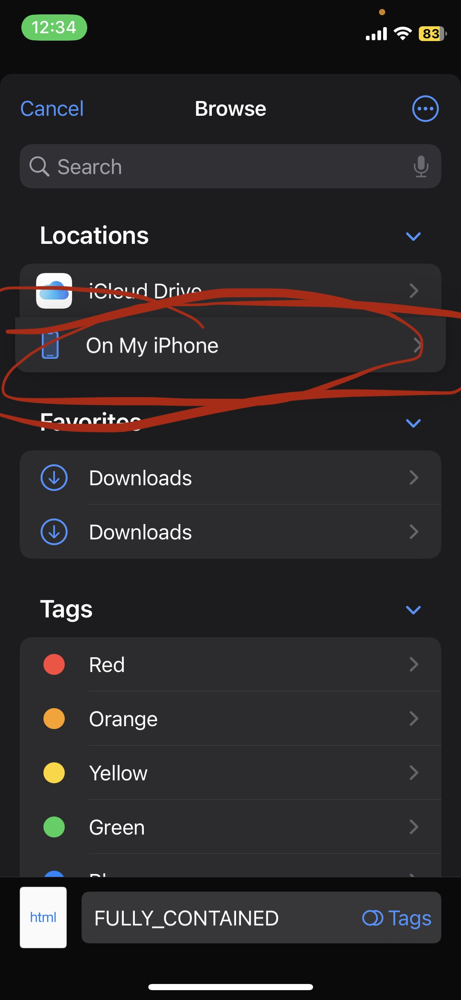Img 6 |
|
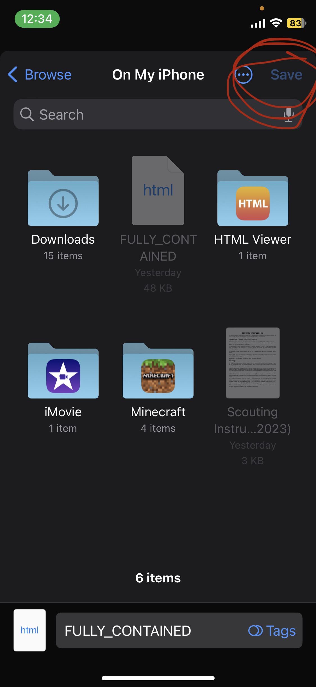Img 7 |
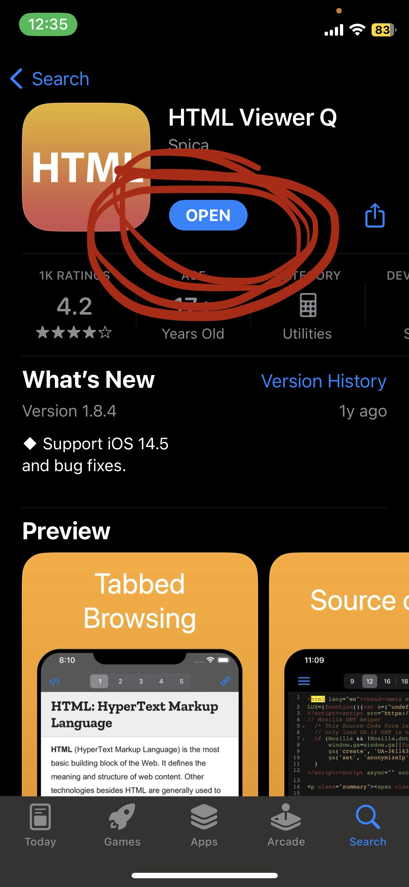Img 8 |
|
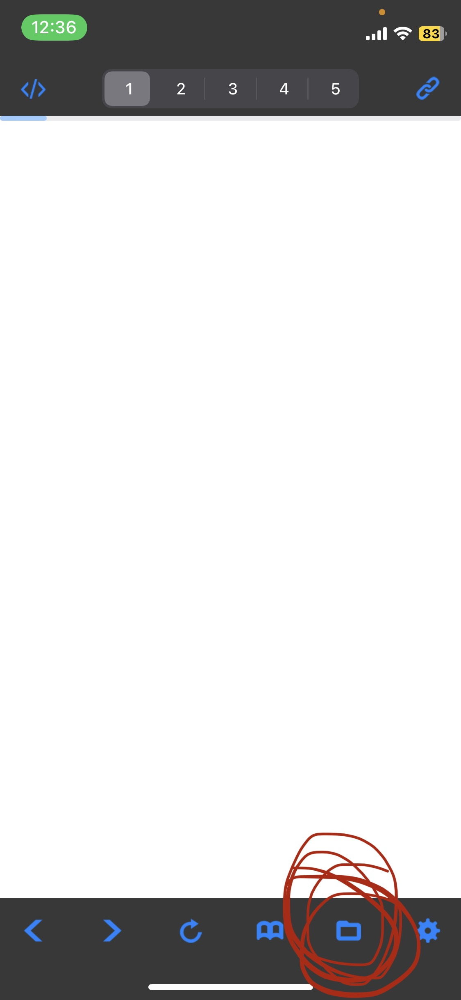Img 9 |
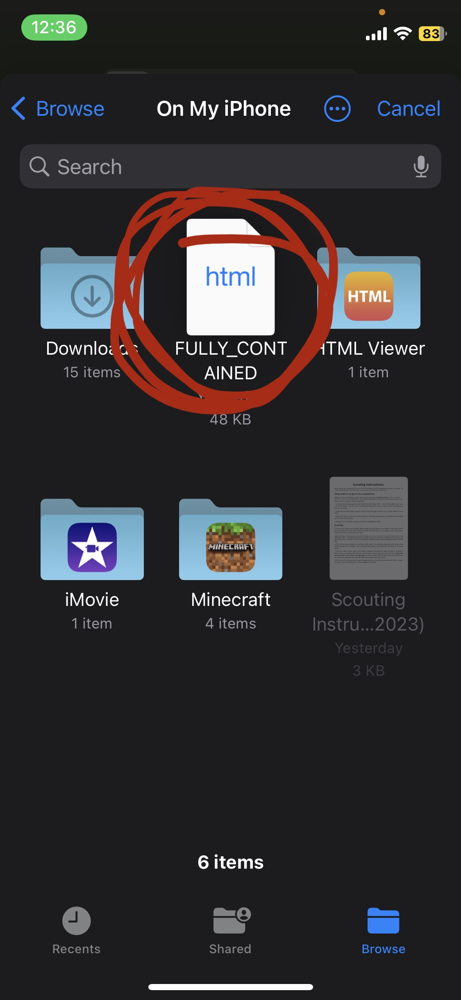Img 10 |
|
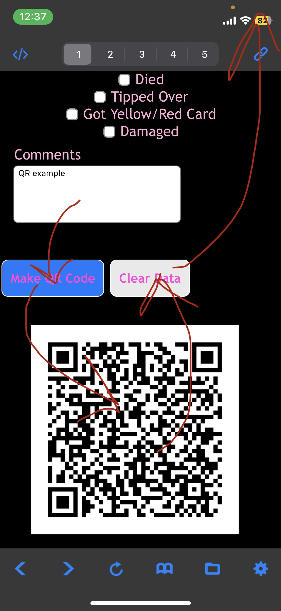Img 11 |